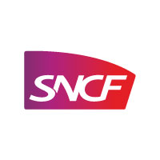

SNCF
Informations sur l'entreprise :
- Nom : eSNCF Solution
- Siège social : Saint-Denis 93066
- Forme juridique : SA à conseil d'administration (s.a.i.)
- Typologie : Grande Entreprise (GE) avec 290 000 employés
- Chiffre d'affaire : 43,4 milliards € (2024), 2e entreprise de transport au monde
- Domaine d'activité : Transport ferroviaire, mobilité, services aux voyageurs.
- Poste : Technicien informatique (support / maintenance)
Support N1/N2
Incidents
Parc informatique